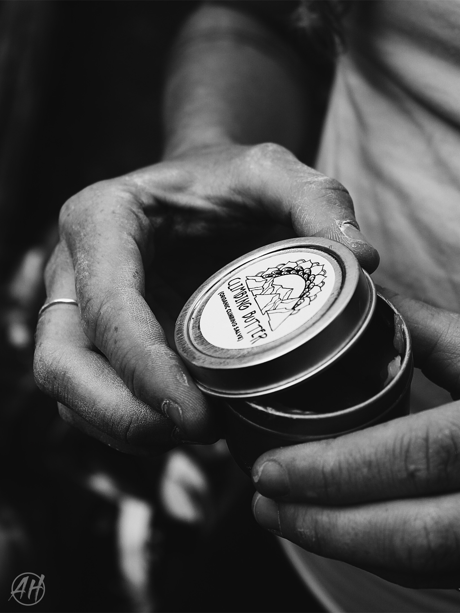
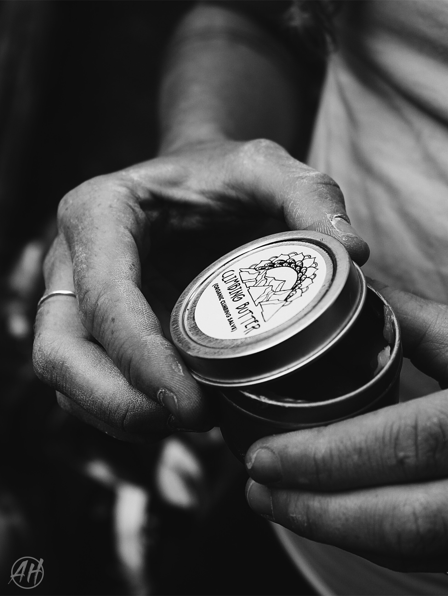

Product and Lifestyle Shoots
 

8 women, 5 crash pads, chalk and giggles in the air and climbing shoes on our feet. Those were the best ingredients to work with in this high energy shoot! Katie's vision was to incorporate her healing hand salve, Climbing Butter, into a bouldering sesh. It felt natural and fun for our climbers and we all instantly became addicted to Katie's amazing product!


I want to be Kati Davis when I grow up! This gal makes incredible leather wrap bracelets and travels about leaving love and a minimal footprint along the way. I snuck in a mini photo session with her on this day where we used the natural morning light to give her brand a warm glow.


Every stone and agate is unique, each piece of jewelery has been hammered or wrapped or soldered by one beautiful soul. Photo sessions with Keri are intentional and intimate, like her jewelery. Getting up close and personal with these peices with my macro lens is a treat. I swear I've seen universes in some of the agates.


TK